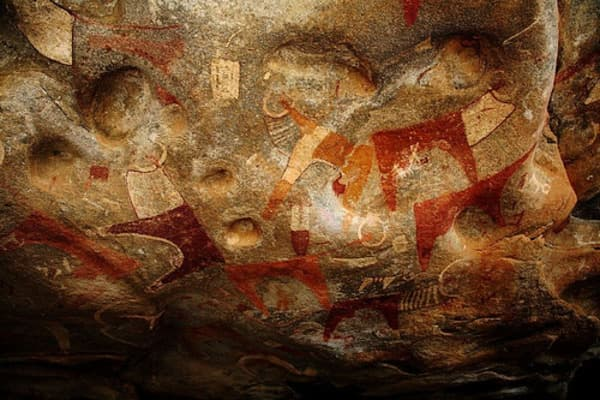
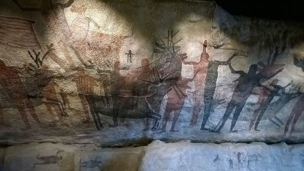
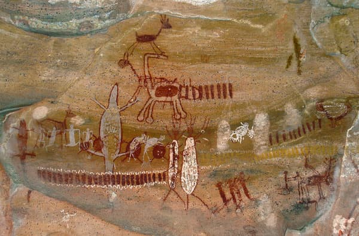
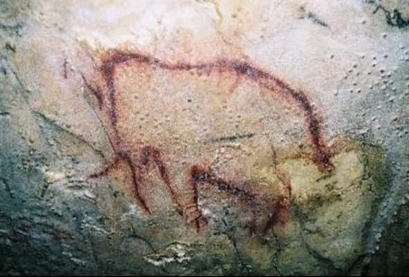
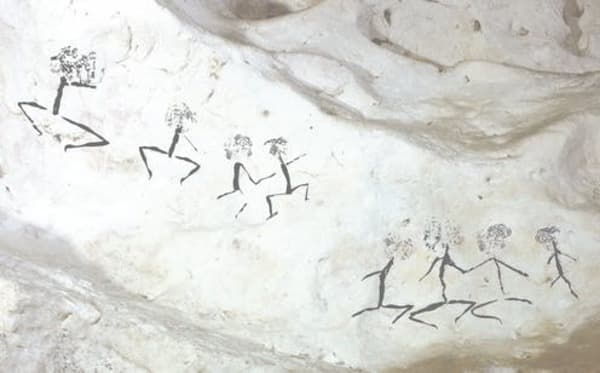
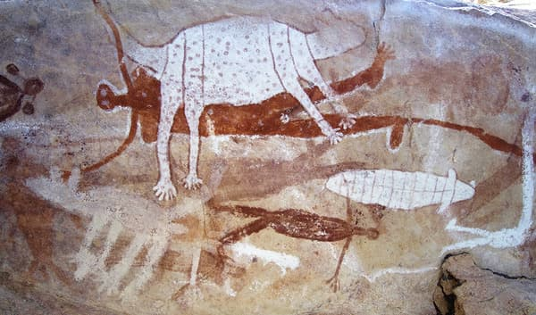

Laas Geel, also spelled Laas Gaal, are cave formations on the rural outskirts of Hargeisa, Somaliland, situated in the Maroodi Jeex region of the country. They contain some of the earliest known cave paintings of domesticated African aurochs (Bos primigenius africanus) in the Horn of Africa. Laas Geel's rock art is estimated to date somewhere around circa 18,000 BC or 20,000 years ago.

The Rock Paintings of Sierra de San Francisco are prehistoric rock art pictographs found in the Sierra de San Francisco mountain range in Mulegé Municipality of the northern region of Baja California Sur state, in Mexico.

Cave painting at Serra da Capivara National Park, Brazil

The caves of Arcy-sur-Cure are a series of caves located on the commune of Arcy-sur-Cure, Burgundy, France. Some of them contained archaeological artefacts, from the Mousterian to Gallo-Roman times. Some hold remarkable parietal art, the second oldest presently known after those of the Chauvet cave. Another notable characteristic of these caves is the time-long series of pollen, related to determined and consistent archaeological levels.
Lascaux is a complex of caves near the village of Montignac, in the department of Dordogne in southwestern France. Over 600 parietal wall paintings cover the interior walls and ceilings of the cave. The paintings represent primarily large animals, typical local contemporary fauna that correspond with the fossil record of the Upper Paleolithic in the area.

Human figures from East Kalimantan, Indonesian Borneo. This style is dated to at least 13,600 years ago but could possibly date to the height of the last glacial maximum 20,000 years ago.

There are several collections of rock art in Quinkan Country that are at least 15,000 years old, including paintings of wildlife, spirits and people. The sites can be reached via several walks; the Quinkan and Regional Cultural Centre in Laura, 210km north-west of Cairns, gives guided tours from late March until early December.
{kind=link}
{kind=link}
{kind=link}
{kind=link}
{kind=link}
{kind=link}
{kind=link}